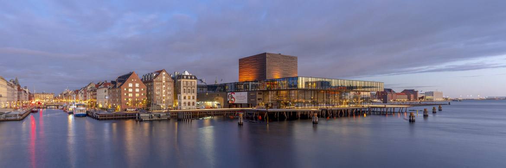

Turistguide i Danmark
Se alle attraktioner
Se en bestemt attraktion
Tivoli
SMK
Nyhavn
Se en attraktion baseret på sæson
Sommer
Vinter
Helår
Slet en attraktion
Tivoli
SMK
Nyhavn

Velkommen til Danmarks bedste side for turister
Tjek disse udvalgte seværdigheder ud!
Skovtårnet
Legoland
Tivoli